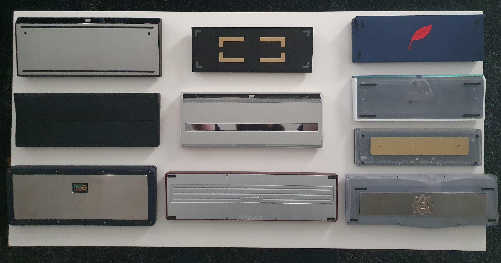
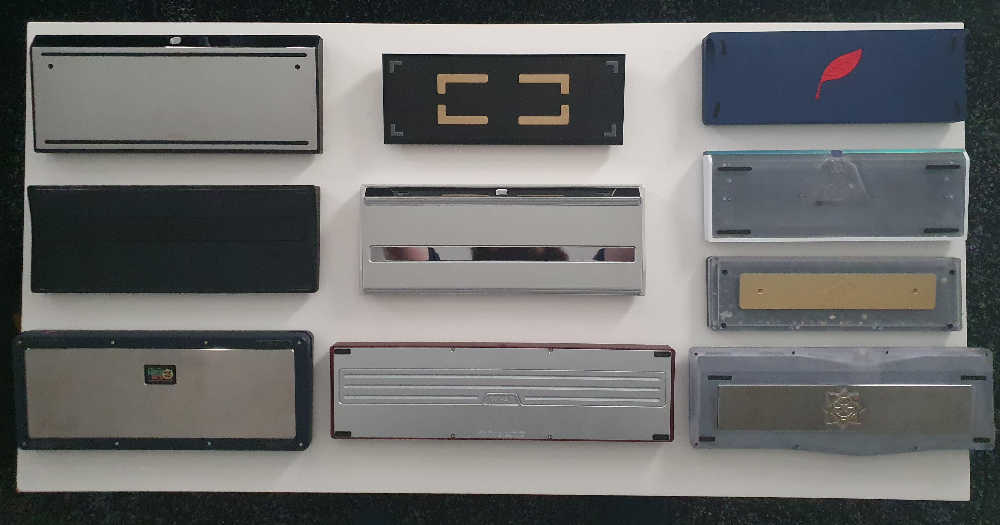

Welcome
Here are a few things i enjoy doing with my time
Building Keyboards
Yes you read that right, i like building custom keyboards. Ever since i started with my PC gaming days, peripherals has always been a modest interest of mine, and one day in 2020 i found a video of a typing test on a custom built "Fjell keyboard" and i instantly fell in love. The sound, feel and look can all be customized to my liking and i have since 2020 built quite few of them (to my wallets despair) I have linked the video here if you want to check it out.

Keyboard collection
Here is my current collection of keyboards.
 

Components
These are some components i have laying around for my next build which is going to be a "Matrix Navi" from Matrix Lab. I am going to be building a polar route (silver version). The PCB shown here is only for display since the one i am going to use is coming with the keyboard case, this picture will give you a general gist of the main components outside of the case. The keycaps are a set called GMK Frost Witch, switches are BSUN Flower Shadow switches, and the stabilizers are TX AP 1.2mm version since the PCB is only 1.2mm thick instead of the standard 1.6mm.
PC and Games
This is a small segment about PC building and some of my favourite games
Current PC
This is my current PC, i have been building them myself since 2012.
Elden Ring
I originally hadn't planned to play this game since i haven't played any of the souls game before, but i decided to give it a try and it really blew me away. Excellent level design/art direction, huge arsenal of creative weapons and armor, vast amounts of different enemy types and bosses. Story wise it's a bit subdued but the gameplay itself is 10/10.

The Legend of Zelda: Tears of the Kingdom
This game is from my favourite series of all time the Zelda series. This game and the prequel The legend of Zelda Breath of the Wild takes a different aproach to open world games and for me personally, the serene feeling you get playing these games is unique. Huge world map with 3 vertical layers and no loading screens just makes the world feel so fluid and dynamic, definitly in the top 10 of open world games.
Final Fantasy X
This is a bit of an older game, originally it came out for the PS2 in 2001 and it's a turn based JRPG from the final fantasy series. The turn based combat is quite intricate and the cast of characters all feel viable to use, the story is great and the side quest portion of the game might even be longer than the regular story portion of the game. Some parts outside of the story can feel grindy and tedious but overall it's an excellent game.